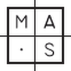
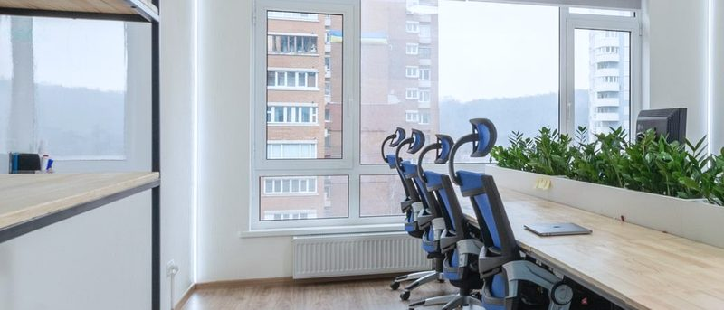

N01 · it-fleet-renewal-scheduled
IT fleet renewal scheduled
We take an inventory of your computers and build a renewal schedule that fits your budget.
Carballo · A Coruña, Spain — IT support and services
Move your IT to upper level. Less problems, more performance.
We keep the computers and servers of small businesses and professional practices in the area running. Remote whenever possible, on site when it is needed.
02 — what we do
Every service is a node on the same board: the inventory feeds the renewal, the monitoring triggers the support, the backup underwrites the recovery. 9 services, the same ones Calidade Systems publishes today.
N01 · it-fleet-renewal-scheduled
We take an inventory of your computers and build a renewal schedule that fits your budget.
N02 · remote-and-in-site-support
Whenever possible we work remotely: no travel to your office, faster and cheaper resolution.
N03 · computer-optimization
We check your equipment to get the maximum performance out of it.
N04 · experts-report
Experts certified by the professional body of IT engineers.
N05 · monitoring-365x24
We check your server health continuously, mitigating downtimes.
N06 · backup-automatitation
Stop wondering when the last backup ran: we build a backup strategy for you and verify it daily.
N07 · server-consolidation
Using virtualization technologies we cut server spend and make management easier.
N08 · data-recovery
When the installation was not well planned, it is time to recover data.
N09 · proactive-maintenance
Better than solving problems is avoiding problems.
03 — monitoring and backups
Calidade Systems has a plan B
We check server health continuously to mitigate downtime. And backups are not only taken: they are verified every day. When something breaks, the question has already been answered before you ask it.
Specific monitoring and backup tooling, retention windows and committed response times: [TECHNICAL DETAIL PENDING].
04 — expert's report
subject
IT expert's report.
accreditation
Experts certified by the professional body of IT engineers.
body
[PROFESSIONAL BODY AND MEMBERSHIP NUMBER PENDING]
scope
[REPORT TYPES AND COURT SCOPE PENDING]
contact
+34 622 64 48 35 · Monday to Friday, 9:00–19:00
This block states only what Calidade Systems claims today on its own site. Everything else is deliberately marked as pending: an expert report is sold on verifiable facts, not on adjectives.
05 — clients
5.0 ★ 19 reviews on Google

Logos already shown publicly on the current Calidade Systems site · [CONFIRM PERMISSION TO USE]
«Calidade Systems help us to obtain the max performance of our equipment, created an automatic scheduled backup systems and checks our server performance. Now we don't worry about I.T. problems because Calidade Systems has a plan B».
«Thanks to Calidade Systems we have deploy, staging and production environments, they have improved the performance of our servers, now our webapps have incredibly fast response time».

The text of the 19 Google reviews has not been copied here yet: [GOOGLE REVIEW TEXTS PENDING]. The two testimonials above are the ones Calidade Systems publishes on its own site; only obvious spelling slips have been corrected.
06 — technical notebook
40 articles published since 2017: real faults, solved and written down. The notebook still lives on the Calidade Systems WordPress; this page only reads it.
26/08/2026
This morning I had a UniFi Network 8.x controller humming along on an Ubuntu box that was getting old.
02/02/2023
Last Windows 11 versions ask you to add a Microsoft Account at install time, and in some cases we don't want to.
09/02/2022
Change del value del = \010 (zero one zero).
24/10/2021
Every day I get a notice about a new framework that will solve all problems in software development.
Read the whole blog Latest English entry: August 2026. The Spanish notebook stopped in 2020.
07 — contact